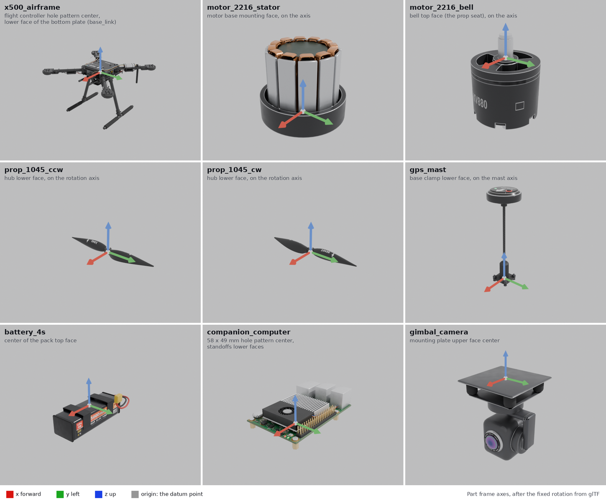

Visual asset commission
The X500’s visual models follow the
gltf-robotics workflow. Its
commission, the written statement of what each part is and where its origin
sits, is
holybro_parts/commissions/commission-x500.yaml.
Each part’s manifest, the metadata inside its <part>_visual.glb, is written
from it with gltf-manifest.
Every part is modeled by Honu Robotics from the kit’s dimensions (hole patterns, tube diameters, part sizes and positions) and licensed Apache 2.0.
Datums
Every part’s origin is a named feature of the part: a hole pattern, a mounting
face, the face where two parts seat. The airframe is the base part, and its
datum is base_link; every other part is a component, its datum where it
mounts.

Each part’s origin and axes in the part frame, after the fixed rotation from glTF’s axes.
Part |
Role |
Datum |
|---|---|---|
|
base |
center of the 30.5 mm flight controller hole pattern, on the lower face of the bottom plate |
|
component |
center of the motor base’s mounting face, on the motor axis |
|
component |
center of the bell’s top face, where the prop seats, on the motor axis |
|
component |
center of the hub’s lower face, which seats on the bell, on the rotation axis |
|
component |
center of the base clamp’s lower face, on the mast axis |
|
component |
center of the pack’s top face, which straps against the battery pad |
|
component |
center of the 58 x 49 mm hole pattern, on the standoffs’ lower faces |
|
component |
center of the mounting plate’s upper face |
The bell and the propeller share a datum, the point where the propeller seats, so both sit at the rotor slot’s origin.
Deviations from the profile
Partial metalness. Real metal (fasteners, standoffs, pins, laser markings on aluminum) is metallic 0.25 to 0.65, not 1: Gazebo renders full metalness black for want of an environment map.
gltf-checkwarns on this for four parts.No nominal dimension on the airframe and the battery: none of the published figures is an overall extent of the part as modeled. The commission says why for each.